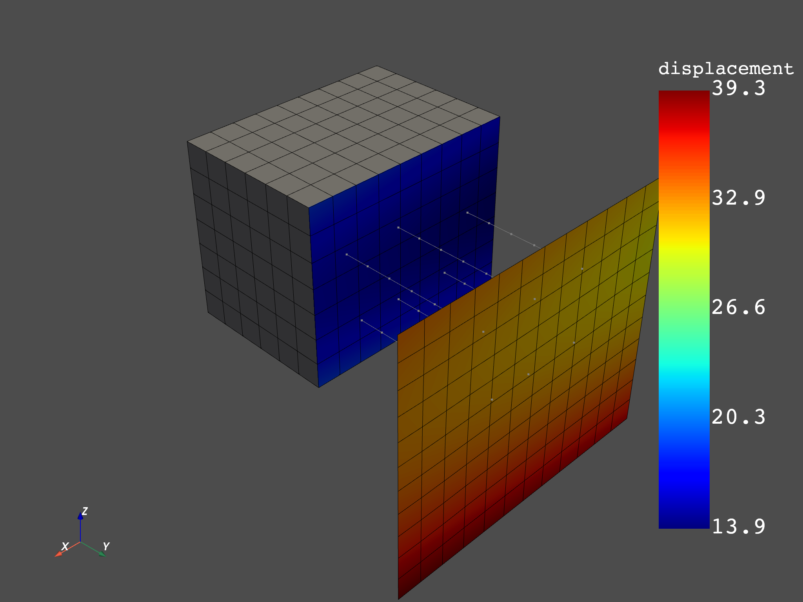
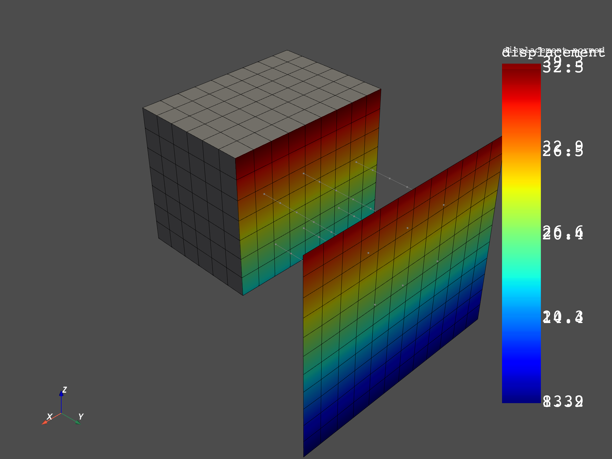
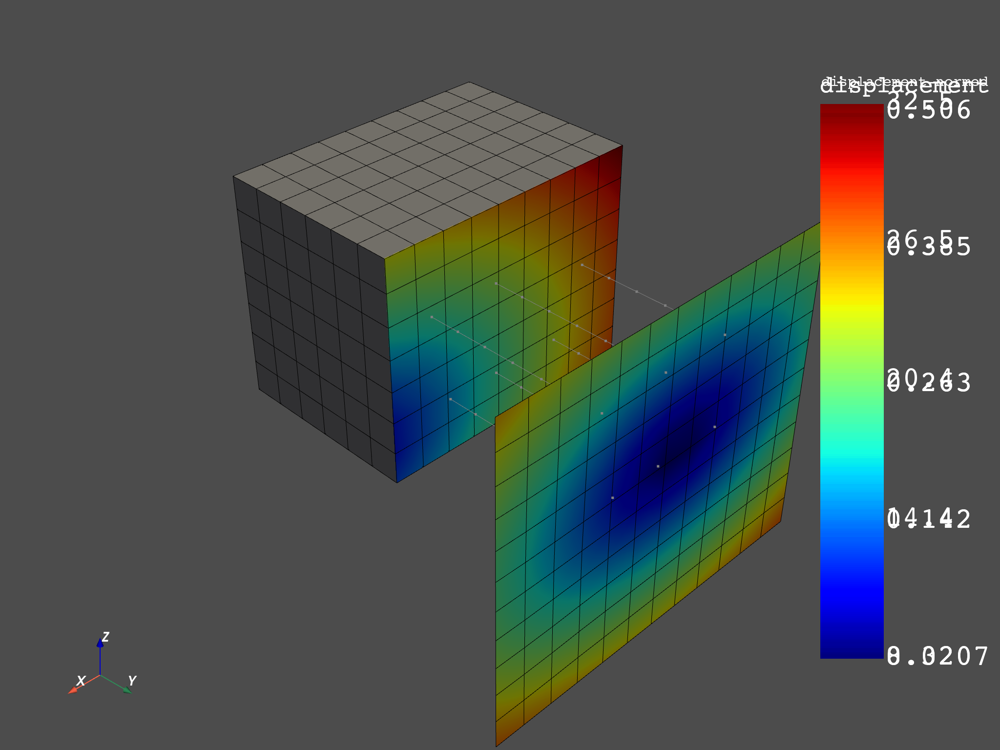
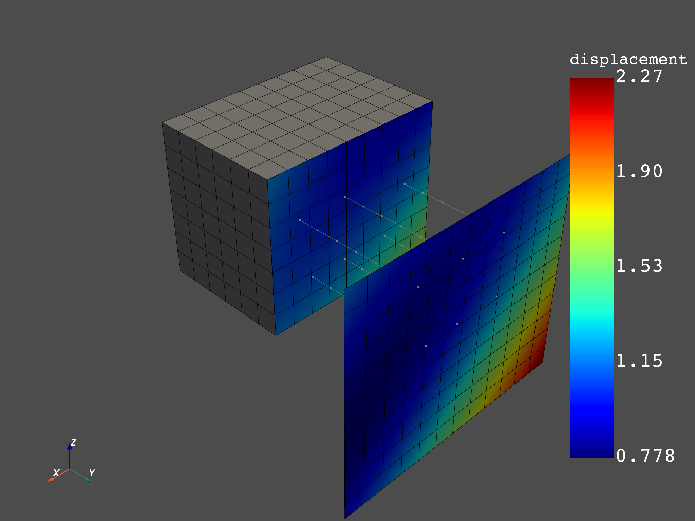
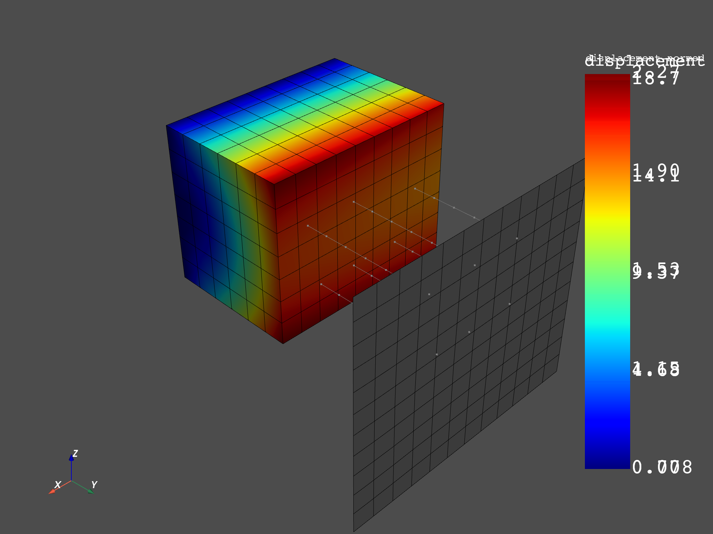
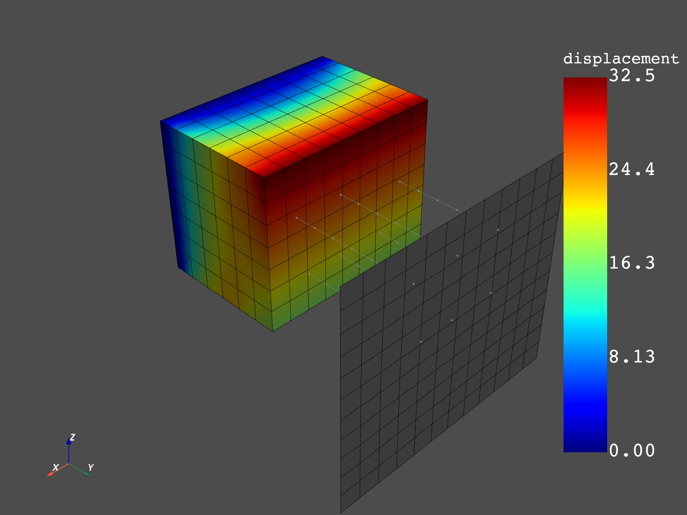
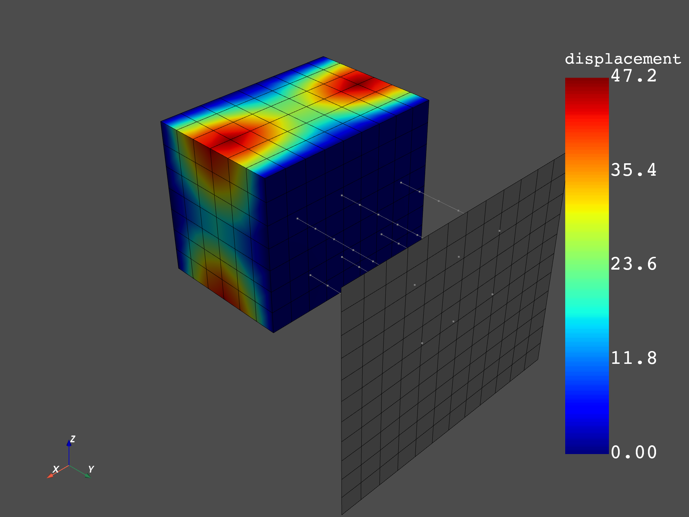
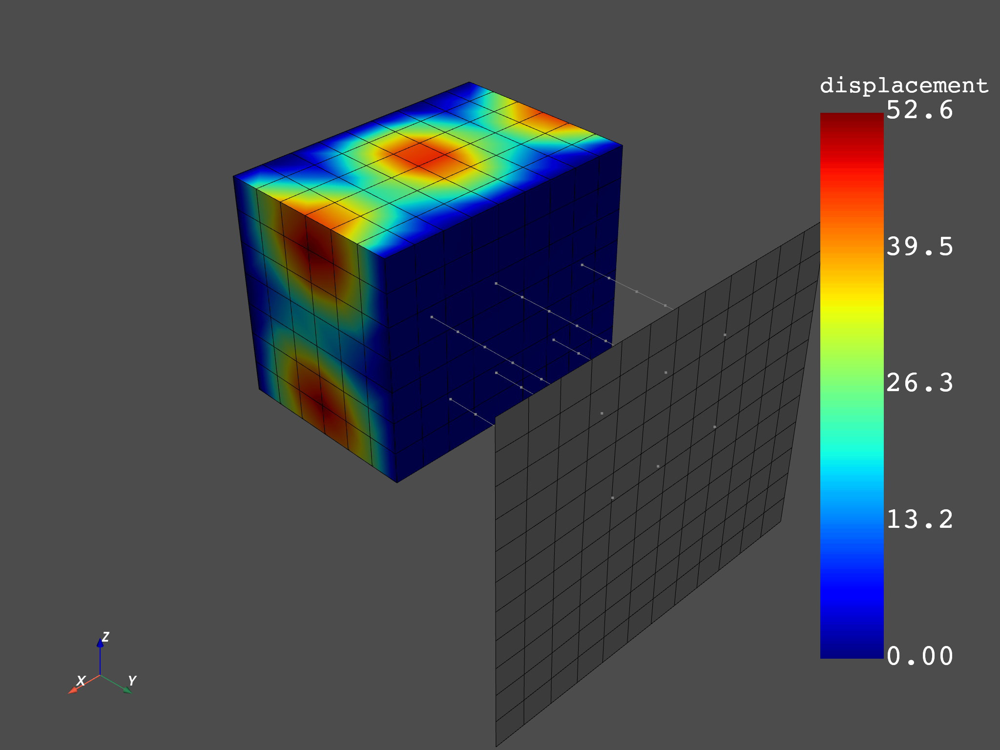

Note
Click here to download the full example code
Use Result Helpers to compare mode shapes for solids and then shells¶
The Result class which instances are created by the Model gives access to helpers to request results on specific mesh and time scopings. With those helpers, working on a custom spatial and temporal subset of the model is straightforward.
import numpy as np
from ansys.dpf import core as dpf
from ansys.dpf.core import examples
from ansys.dpf.core import operators as ops
First, create a model object to establish a connection with an example result file
model = dpf.Model(examples.download_all_kinds_of_complexity_modal())
print(model)
Out:
DPF Model
------------------------------
DPF Result Info
Analysis: modal
Physics Type: mecanic
Unit system: MKS: m, kg, N, s, V, A, degC
Available results:
U Displacement :nodal displacements
RF Force :nodal reaction forces
ENF Element nodal Forces :element nodal forces
S Stress :element nodal component stresses
ENG_VOL Volume :element volume
ENG_SE Energy-stiffness matrix :element energy associated with the stiffness matrix
ENG_AHO Hourglass Energy :artificial hourglass energy
ENG_TH thermal dissipation energy :thermal dissipation energy
ENG_KE Kinetic Energy :kinetic energy
ENG_CO co-energy :co-energy (magnetics)
ENG_INC incremental energy :incremental energy (magnetics)
EPEL Strain :element nodal component elastic strains
BFE Temperature :element structural nodal temperatures
------------------------------
DPF Meshed Region:
2388 nodes
1824 elements
Unit: m
With solid (3D) elements, shell (2D) elements, shell (3D) elements, beam (1D) elements
------------------------------
DPF Time/Freq Support:
Number of sets: 45
Cumulative Frequency (Hz) LoadStep Substep
1 4800.665229 1 1
2 6472.119402 1 2
3 10094.813112 1 3
4 15408.070193 1 4
5 19935.616102 1 5
6 30659.224027 1 6
7 33485.028985 1 7
8 40514.020302 1 8
9 41144.836724 1 9
10 41696.364343 1 10
11 42568.142453 1 11
12 48803.935725 1 12
13 51557.014600 1 13
14 54829.807966 1 14
15 55121.065060 1 15
16 55481.661956 1 16
17 55779.054274 1 17
18 56346.453210 1 18
19 56598.396154 1 19
20 57504.056787 1 20
21 57768.209089 1 21
22 60135.893137 1 22
23 62336.016111 1 23
24 62809.029190 1 24
25 64186.171203 1 25
26 64911.479227 1 26
27 66488.724651 1 27
28 66728.182829 1 28
29 67521.333063 1 29
30 68699.230845 1 30
31 70108.268581 1 31
32 71432.124756 1 32
33 71784.765113 1 33
34 73189.275762 1 34
35 74862.553459 1 35
36 75051.318416 1 36
37 76335.025905 1 37
38 76631.728520 1 38
39 76956.786796 1 39
40 77754.144888 1 40
41 78460.122703 1 41
42 78721.878185 1 42
43 79330.520798 1 43
44 80301.992725 1 44
45 80835.840814 1 45
Visualize specific mode shapes¶
Choose the modes to visualize
modes = [1,5,10,15]
Choose to split the displacement on solid/shell/beam to only focus on shell elements
disp = model.results.displacement
for mode in modes:
fc = disp.on_time_scoping(mode).split_by_shape.eval()
model.metadata.meshed_region.plot(fc.shell_field())
- 
- 
- 
- 
Choose to split the displacement on solid/shell/beam to only focus on solid elements
disp = model.results.displacement
for mode in modes:
fc = disp.on_time_scoping(mode).split_by_shape.eval()
model.metadata.meshed_region.plot(fc.solid_field())
- 
- 
- 
- 
Total running time of the script: ( 0 minutes 5.271 seconds)